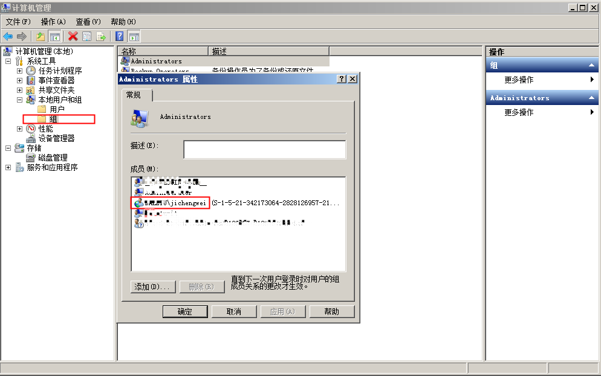

prometheus 监控windows
通过ansible 批量操作windows机器，部署windows_exporter-0.21.0-amd64.exe
-
ansible批量操作windows
-
windows_exporter监控windows进程
-
prometheus监控windows_exporter
1、需要检查的
通过ansible批量操作windows机器。
1、登录名
ansible登录用户名必须与系统组记录的成员名一致，要不然会一直报错，"ntlm: the specified credentials were rejected by the server" 
{kind=link}
2、检查网络状态是否是专有网络
3、在被控windows电脑中，通过管理员方式打开powershell，执行如下
winrm quickconfig
winrm set winrm/config/service/auth '@{Basic="true"}'
winrm set winrm/config/service '@{AllowUnencrypted="true"}'
4、控制端在linux机器上，安装如下
2、ansible配置
1、ansible host可以如下
[wind]
my_server ansible_host=192.168.61.153 ansible_ssh_user="aaa\bbb"
ansible_ssh_pass="xxx"
[wind:vars]
ansible_ssh_port=5985
ansible_connection="winrm"
ansible_winrm_server_cert_validation=ignore
ansible_winrm_transport=ntlm
2、测试一下
[root@www ~]# ansible -i /etc/ansible/myhost wind -m win_ping
my_server | SUCCESS => {
"changed": false,
"ping": "pong"
}
3、开始批量操作
---
- hosts: wind
gather_facts: no
tasks:
- name: create directory
win_file:
path: D:\ops_control
state: directory
- name: copy pkg
win_copy:
src: "{{item}}"
dest: D:\ops_control\
force: yes
with_items:
- /etc/ansible/pkg/windows_exporter-0.21.0-amd64.exe
- /etc/ansible/pkg/wind_exporter.exe
- /etc/ansible/config/config.yml
- /etc/ansible/pkg/start_win_exporter.bat
#创建目录
ansible -i /etc/ansible/myhost wind -m win_file -a "path=D:\ops_control state=directory"
复制
ansible -i /etc/ansible/myhost wind -m win_copy -a "src=/etc/ansible/pkg/windows_exporter-0.21.0-amd64.exe dest=D:\ops_control\ force=yes"
ansible -i /etc/ansible/myhost wind -m win_copy -a "src=/etc/ansible/config/config.yml dest=D:\ops_control\ force=yes"
ansible -i /etc/ansible/myhost wind -m win_copy -a "src=/etc/ansible/pkg/start_win_exporter.bat dest=D:\ops_control\ force=yes"
执行
ansible -i /etc/ansible/myhost wind -m win_command -a "chdir=D:\ops_control .\start_win_exporter.bat"
重启
ansible -i /etc/ansible/myhost wind -m raw -a "taskkill /F /IM windows_exporter-0.21.0-amd64.exe /T"
3、windows_exporter
1、配置
windows_exporter的config.yml配置文件示例，监控指定进程的状态，我上传的一个dashboard，也是参考别的大佬的，有需要的可以自取：https://grafana.com/grafana/dashboards/18236-1-windows-exporter-for-prometheus-dashboard-cn-v20201012/
---
# Note this is not an exhaustive list of all configuration values
collectors:
enabled: cpu,cs,logical_disk,net,os,process,system,textfile
collector:
process:
whitelist: "QQ.*"
# service:
# services-where: Name='windows_exporter'
# scheduled_task:
# blacklist: /Microsoft/.+
log:
level: warn
scrape:
timeout-margin: 0.5
telemetry:
addr: ":9182"
path: /metrics
max-requests: 5
2、bat脚本启动
exporter地址：https://github.com/prometheus-community/windows_exporter3、监控检查与启动
4、prometheus的监控
1、prometheus配置
Prometheus配置
# my global config
global:
scrape_interval: 15s # Set the scrape interval to every 15 seconds. Default is every 1 minute.
evaluation_interval: 1m # Evaluate rules every 15 seconds. The default is every 1 minute.
# scrape_timeout is set to the global default (10s).
# Alertmanager configuration
alerting:
alertmanagers:
- static_configs:
- targets:
- localhost:9093
# Load rules once and periodically evaluate them according to the global 'evaluation_interval'.
rule_files:
- "/opt/soft/alertmanager-0.25.0.linux-amd64/local_rules.yml"
# - "/opt/soft/alertmanager-0.25.0.linux-amd64/hoststatus_rules.yml"
# - "first_rules.yml"
# - "second_rules.yml"
# A scrape configuration containing exactly one endpoint to scrape:
# Here it's Prometheus itself.
scrape_configs:
# The job name is added as a label `job=<job_name>` to any timeseries scraped from this config.
#- job_name: "prometheus"
# metrics_path defaults to '/metrics'
# scheme defaults to 'http'.
#static_configs:
# - targets: ["localhost:9090"]
#- job_name: 'redis'
# static_configs:
# - targets: ['192.168.60.174:9121']
# labels:
# ecs: redis
# metrics_path: /scrape
# relabel_configs:
# - source_labels: [__address__]
# target_label: __param_target
# - source_labels: [__param_target]
# target_label: instance
- job_name: "windows_prometheus"
static_configs:
- targets: ["192.168.61.153:9182","192.168.62.238:9182"]
2、alertmanager的配置
Alertmanager配置
alertmanager.yml
global:
resolve_timeout: 5m
smtp_smarthost: 'smtp.163.com:25'
smtp_from: 'xxx@163.com'
smtp_auth_username: 'xxx@163.com'
smtp_auth_password: 'xxx'
smtp_require_tls: false
templates:
- 'notify.tmpl'
route:
group_by: ['alertname']
group_wait: 10s
group_interval: 10s
repeat_interval: 5m
receiver: 'default-receiver'
routes:
- receiver: 'ops'
match:
severity: 'error'
group_wait: 10s
receivers:
- name: 'default-receiver'
email_configs:
- to: 'xxx@dingtalk.com'
html: '{{ template "notify.html" . }}'
headers: { Subject: "来自prometheus_60.203_报警邮件"}
send_resolved: true
- name: 'ops'
email_configs:
- to: 'xxx@qq.com'
html: '{{ template "notify.html" . }}'
headers: { Subject: "来自prometheus_60.203_报警邮件"}
send_resolved: true
inhibit_rules:
- source_match:
severity: 'critical'
target_match:
severity: 'warning'
equal: ['alertname', 'dev', 'instance']
Local_rules
local_rules.yml
groups:
- name: local_rules
rules:
# Alert for any instance that is unreachable for >5 minutes.
- alert: InstanceDown
expr: up{job="windows_prometheus"} == 0
for: 2m
labels:
severity: error
annotations:
summary: "Instance {{ $labels.instance }} down"
description: "{{ $labels.instance }} of job {{ $labels.job }} has been down for more than 5 minutes, current value: {{ $value }}"
- alert: processThreadsTooMany
expr: windows_process_threads{} > 0
for: 10m
annotations:
summary: "Threads too many {{ $labels.instance }} {{ $labels.process }}"
description: "{{ $labels.instance }} {{ $labels.process }} (current value: {{ $value }})"
Notify
notify.tmpl
{{ define "notify.html" }}
{{- if gt (len .Alerts.Firing) 0 -}}{{ range .Alerts }}
@异常警告 <br>
实例: {{ .Labels.instance }} <br>
信息: {{ .Annotations.summary }} <br>
详情: {{ .Annotations.description }} <br>
开始时间: {{ (.StartsAt.Add 28800e9).Format "2006-01-02 15:04:05" }} <br><br>
{{ end }}{{ end -}}
{{- if gt (len .Alerts.Resolved) 0 -}}{{ range .Alerts }}
@异常恢复 <br>
实例: {{ .Labels.instance }} <br>
信息: {{ .Annotations.summary }} <br>
开始时间: {{ (.StartsAt.Add 28800e9).Format "2006-01-02 15:04:05" }} <br>
恢复时间: {{ (.EndsAt.Add 28800e9).Format "2006-01-02 15:04:05" }} <br>
{{ end }}{{ end -}}
{{- end }}
3、重启prometheus
4、参考链接
https://blog.csdn.net/W1124824402/article/details/128408171
https://ost.51cto.com/posts/14124
https://github.com/prometheus/alertmanager/blob/main/template/default.tmpl
https://prometheus.io/docs/alerting/latest/notification_examples/

本文阅读量 次